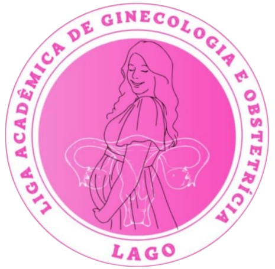
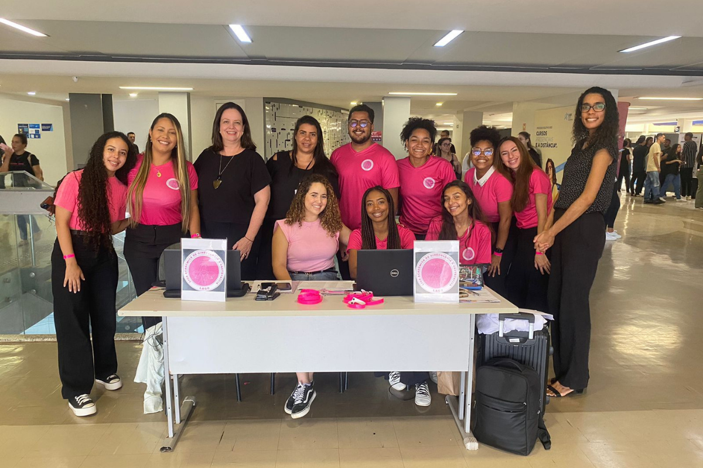
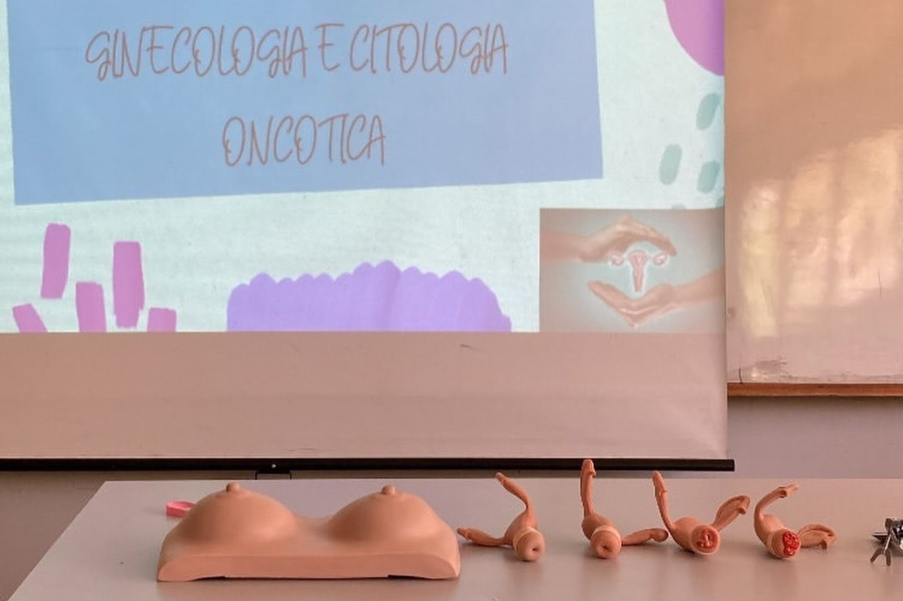
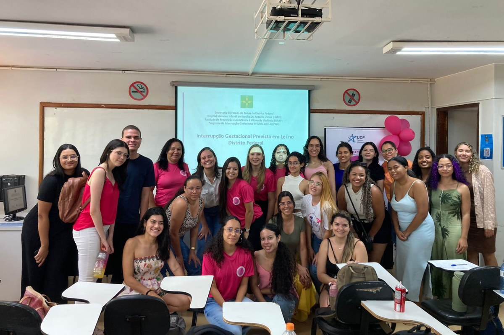
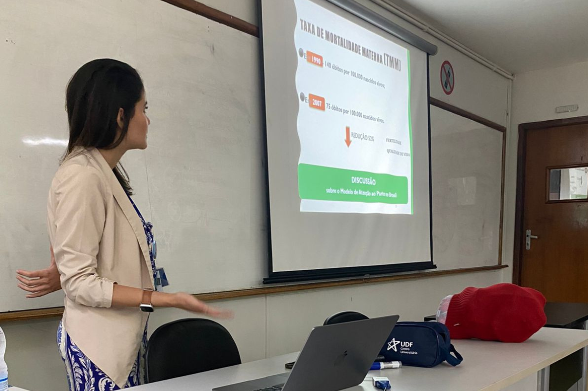
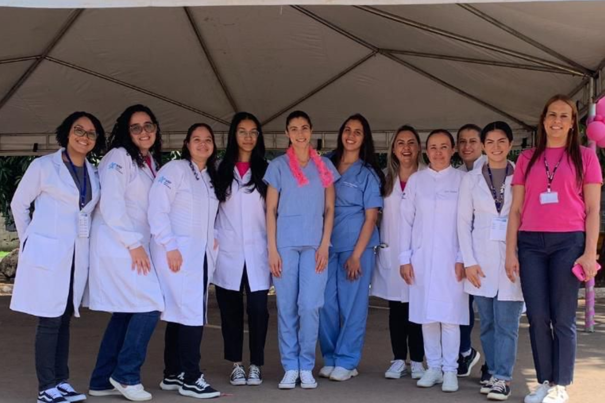

Liga Acadêmica de Ginecologia e Obstetrícia
Missão
Promover o conhecimento, o senso crítico e a abordagem humanizada na assistência ginecológica e obstétrica, além de oferecer experiências práticas extracurriculares que incentivem o protagonismo dos ligantes.
Foco das Atividades
A Liga Acadêmica de Ginecologia e Obstetrícia promove estudos e práticas sobre a saúde da mulher, com foco na assistência humanizada e experiências extracurriculares.
Diretoria
A LAGO conta com um total de 33 membros, incluindo a diretoria.
Atualmente, os membros da diretoria são:
• Presidente - Joyce Magalhães;
• Vice - Presidente - Marianna Marques;
• Diretora Administrativa - Stephany Dantas;
• Diretor Financeiro - Luiz Gabriel;
• Secretariado - Any Alcântara;
• Diretora de Marketing - Luara Itacarambi.
Criação
A LAGO foi criada no 2° (segundo) semestre de 2023.
Contato
Fique a vontade para enviar uma mensagem no e-mail oficial da LAGO.
E-mail: ligalagoudf@gmail.com
Atividades Realizadas:
Recepção e cadastramento de participantes do Pré Congresso Brasileiro de Enfermagem Obstétrica e Neonatal

Descrição: A atividade de recepção e cadastramento dos participantes do Pré-Congresso Brasileiro de Enfermagem Obstétrica e Neonatal consiste em acolher os inscritos no evento, verificar as informações de registro e fornecer materiais de apoio, como crachás e programações.
Palestra de Prevenção ao Câncer de Mama e Colo do Útero

Descrição: A palestra sobre prevenção ao câncer de mama e colo do útero aborda os principais fatores de risco, a importância do diagnóstico precoce e as estratégias de cuidados preventivos. O objetivo é conscientizar o público e promover hábitos de saúde que reduzam a incidência dessas doenças.
Palestra sobre Interrupção Legal da Gestação

Descrição: A palestra sobre interrupção legal da gestação esclarece os aspectos legais, médicos e éticos relacionados ao tema, discutindo as condições previstas pela legislação e as implicações para a saúde da mulher. O objetivo é fornecer informações claras e embasadas sobre o assunto, promovendo o entendimento e o respeito aos direitos reprodutivos.
Palestra sobre Assistência ao Pré-Natal

Descrição: A palestra sobre assistência ao pré-natal aborda as principais práticas e cuidados necessários durante o acompanhamento da gestante, enfatizando a importância do monitoramento contínuo da saúde da mãe e do bebê. O objetivo é informar sobre os protocolos de atendimento, exames essenciais e orientações para uma gestação saudável.
Prática em UBS sobre Prevenção do Câncer de Mama e Inserção de DIU

Descrição: A prática em UBS sobre prevenção do câncer de mama e inserção de DIU visa capacitar os participantes no reconhecimento dos sinais de alerta para o câncer de mama e na realização de exames preventivos. Além disso, aborda a técnica de inserção do Dispositivo Intrauterino (DIU), promovendo conhecimento sobre métodos contraceptivos e cuidados de saúde reprodutiva.